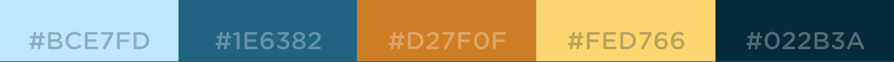

Color Schemes
Example
Uses
#BCE7FD will be used and a primary color for the header and footer.
#022B3A will be a the secondary color. It will be used for the navigation bar, as well as the text.
The remaining colors will be used as accent colors around the site.